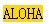

RD1014: 行内非替换元素的高度和宽度的设置仅在 IE 混杂模式中生效
作者：武利剑
标准参考
关于宽度、高度特性的适用元素
宽度和高度特性是用来指定块级元素和替换元素生成框的内容宽度（content width）和内容高度（content height）。
CSS2.1 中明确规定这两个特性不适用于行内非替换元素。
行内非替换元素框的宽度是它的内容渲染后（在任何子元素相对偏移之前）的宽度，它的高则是基于字体。
关于宽度高度的详细信息，请参考 CSS2.1 规范 10.2 Content width: the 'width' property 、10.5 Content height: the 'height' property 、 10.3.1 Inline, non-replaced elements 以及 10.6.1 Inline, non-replaced elements 中的内容。
问题描述
IE 的混杂模式中行内非替换元素的宽高可设置。
造成的影响
可能会导致严重的布局混乱。
受影响的浏览器
| IE(Q) |
|---|
问题分析
在 IE 的混杂模式中，行内非替换元素的高度宽度值都可以设置，这时候，行内非替换元素表现的像一个 inline-block 元素。
分析以下代码：
<span style="width:50px; height:50px; background-color:gold;">
ALOHA
</span>
- SPAN 分别设置了 50px 的宽和高。
SPAN 是行内非替换元素，根据 CSS 2.1 规范规定，宽高不应当起作用。所以 SPAN 元素渲染后的宽高都应跟它的内容 “ALOHA” 有关。
这段代码在不同的浏览器环境中表现如下：
| IE(Q) | IE(S) Firefox Opera Safari Chrome |
|---|---|
 |
 |
可见，IE 只有在混杂模式下，宽高才会对行内非替换元素起作用。
解决方案
在页面上添加<!DOCTYPE HTML>，使页面工作在标准模式下。
参见
知识库
相关问题
测试环境
| 操作系统版本: | Windows 7 Ultimate build 7600 |
|---|---|
| 浏览器版本: |
IE6 IE7 IE8 Firefox 3.6.6 6.0.447.0 dev Safari 5.0 |
| 测试页面: | RD1014.html |
| 本文更新时间: | 2010-07-21 |
关键字
width height non-replaced inline-level element